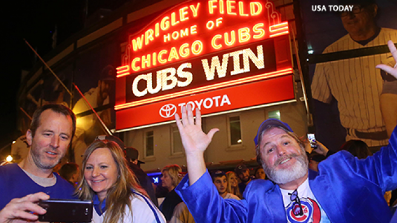

TBSN is now functional! We will be bringing you , the public, the biggest news in the sporting world. So get ready! You will never again need to switch between multiple websites! TBSN includes stories from all major reporting sources, as well as bringing you, the fan, some of best images and videos from the world of sports
 After one hundred eight years of suffering, the Chicago Cubs finally won the World Series, defeating the Cleveland Indians. Fans of both teams came out of woodwarks in the most watched baseball series in more than thirty years, and it didn't dissapoint. It came down to the final Game Seven, a battle that went into extra innings after the score was tied after nine. Then key hits from Ben Zobrist and Miguel Montero gave the Cubbies the win. The Indians now have the longest streak in baseball without a championship, at sixty eight seasons.
The NBA season kicked off last week with high expections for the Warriors. Coming off a season during which they won an NBA record 73 games, the team added the second best player on the planet, Kevin Durant, to their formidable lineup. Still, they're only three wins to two losses. What is going on in the Bay?
| Editor | Telephone | |
|---|---|---|
| Gaurav Rochwani | 706-809-3669 | gr57965@uga.edu |